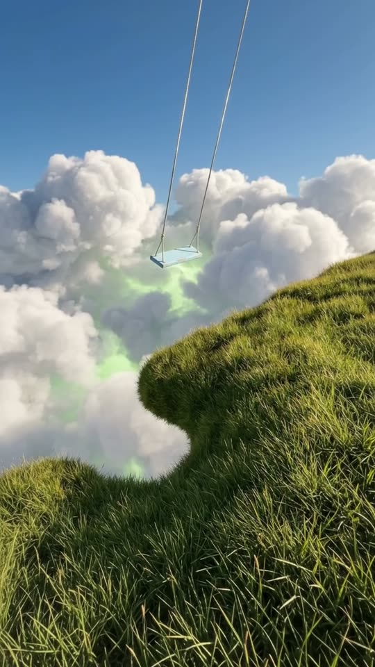
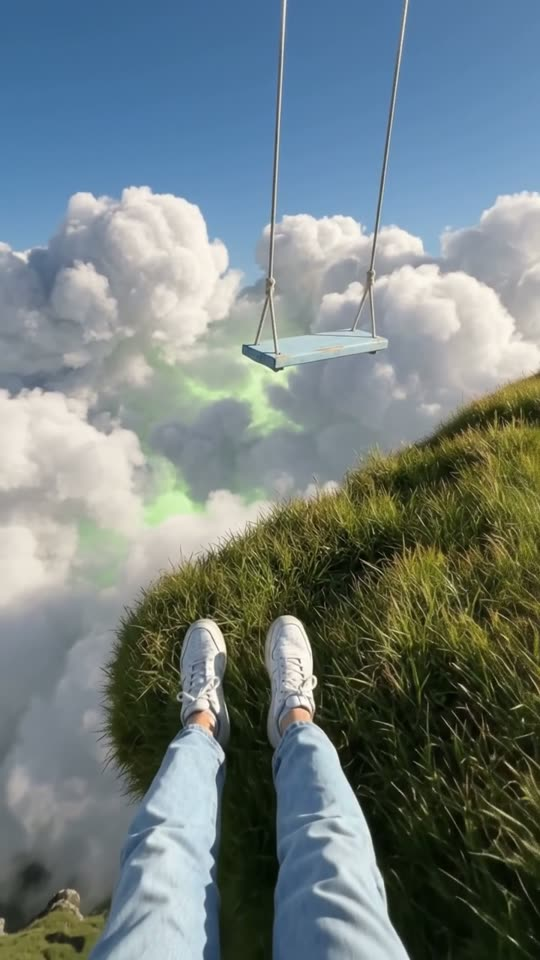
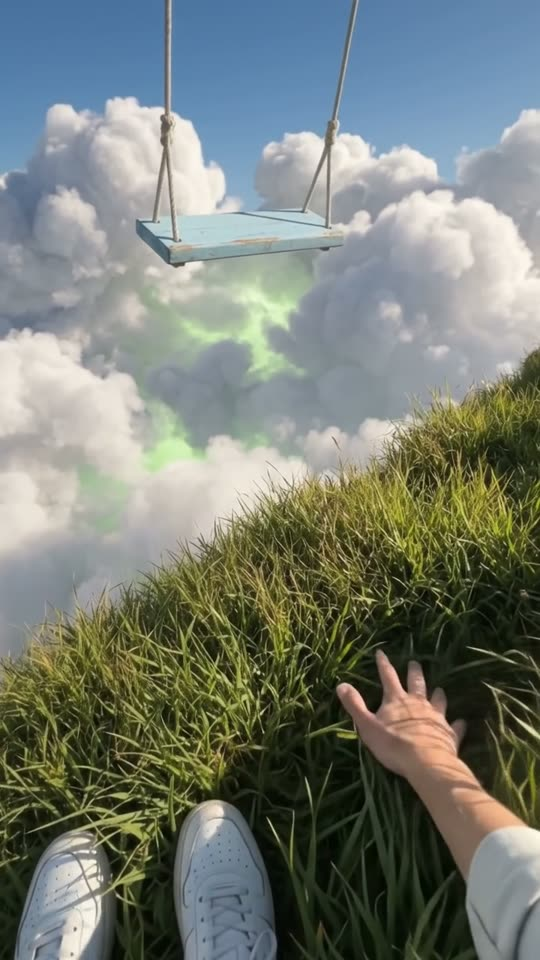
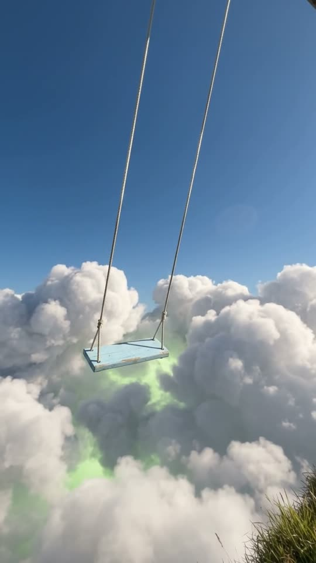

Free prompt pack
One hill.One swing.
Walk down a grassy hill to the edge of the sky. Sit down, run a hand through the grass and look up at a blue swing hanging over a sea of clouds lit lime green from below. One still image and one prompt, in one take.
Both prompts, in the order I ran them. Push each swing until it lets go. Tap the sky to push the big one.
The first frame
Already walking, swing in view. This image is frame one: walking down a steep grassy hill along its edge, big sunlit clouds just below with a lime-green glow between them, and a blue swing hanging past the edge on ropes that come out of the sky.
Watch out
Write each piece as what it really is: meadow grass, heaps of cumulus, the green as light between them. Flat, surface or velvet turn it into a 3D render.

The prompt 147 words
Real photo taken while walking down a steep grassy hillside, looking along its edge. Real meadow grass, thick and slightly long, deep green with sunlit tips, fills the right half and the bottom of the picture, its edge curving down to the lower left in a soft S where the hill drops away. Just below the edge, big billowing cumulus clouds, each a separate heap with crisp sunlit white tops and soft grey shadows, pile up into the distance, and in the gaps between them a lime-green light glows up from underneath like a green mist. Just past the edge, above the clouds, a swing seat of wooden planks painted pale sky blue hangs from two thin ropes that shine in the sun and run straight up out of the top of the picture through clear deep blue sky. Summer afternoon sun, vivid natural colour, real detail.
Down to the edge
Ten seconds, one pair of eyes. Add the image as the reference, set 10 s, 9:16, 720p and audio on, and paste the prompt whole.
- 0–3.0 sthree steps down the hill
- 3.0–5.0 ssit at the edge
- 5.0–7.5 sa hand through the grass
- 7.5–10 slook up at the swing
Watch out
Pin the swing in metres: 6 m past the edge, always over the clouds. Leave it loose and it drifts over the grass halfway through the take.
Fragments



The prompt 1080 words
FORMAT Real handheld daytime video in first person, seen as the finished exported video file: the full picture edge to edge, nothing on top of it. Whatever records the picture is never in frame. One continuous take in real time, no cuts. Vertical frame. The video runs at 24 fps. No frame is repeated. Real time, 1x speed, never slow motion. SCENE A dream that looks completely real, seen through someone's own eyes: they walk down a steep grassy hillside along its edge, just above a sea of billowing white clouds with a lime-green glow between them, where a blue wooden swing hangs in the open air from ropes that come down out of the sky. They sit down at the edge, run a hand through the grass with the clouds just below, and look up at the swing as it sways gently over the clouds. They are already walking in the first frame. The take ends on the swing swaying above the clouds. REFERENCE IMAGE Use it for the grass hillside, the edge, the clouds, the lime-green glow, the sky, the swing and its ropes, and the light. Everything matches it exactly, zero drift. The movement is described below. THE PLACE A steep grassy hillside of real meadow grass, thick and slightly long, deep green with sunlit tips, its edge curving down in a soft S where the hill drops away; no path, no rocks, no fence, no post anywhere on it. Just below the edge, big billowing cumulus clouds, each a separate heap with crisp sunlit white tops and soft grey shadows, pile up into the distance to the horizon, and in the gaps between them a lime-green light glows up from underneath like a green mist; a clear deep blue sky, paler at the horizon. The swing: one seat of wooden planks painted pale sky blue, hanging in the open air 6 m beyond the edge, above the clouds, from two thin ropes that shine in the sun and run straight up out of the top of the frame through empty sky; nothing holds the ropes, no branch, no beam, no post, no frame. LOCATION MAP The person walks down the hillside along its edge; the grass fills frame-right and the bottom; the edge curves from the middle of the frame down to the bottom-left. The swing hangs 8 m ahead and 6 m beyond the edge, just right of centre, its seat level with the top of the edge. The clouds lie just below the edge and fill the left of the view; the sky fills the top half. The swing always hangs over the clouds, never over the grass. FIRST FRAME Already walking: the grass fills the lower right of the frame, x 45-100%, y 45-100%, its edge an S-curve running down to the bottom-left; the billowing white clouds with the lime-green glow between them at x 0-55%, y 40-100%; the blue swing seat at x 55-65%, y 44-48%, just past the edge, its two shining ropes rising out of the top of the frame; the horizon at y 38%, deep blue sky above. Instant read: a swing hanging from the sky at the edge of the world. No delayed reveal. CAMERA First person, at the person's eye height, the natural sway of slow steps, then lower when they sit at the edge. It tilts down to the clouds by at most 30 degrees and back up to the swing. It never cuts, never zooms, never turns around, never shows a wide shot or the person from outside. The swing stays in frame from the first frame to the last, at the top of the frame when they look down. ACTION TIMING 0–3.0 s — Three slow steps down the grass along the edge; the long blades brush past the bottom of the frame; the swing ahead gets a little closer. 3.0–5.0 s — They sit down at the edge: the view drops to sitting height and their own legs come into the bottom of the frame, light blue jeans and white sneakers, stretched out toward the edge, the clouds just below past the sneakers. 5.0–7.5 s — The view tilts down a little; their right hand comes into frame and runs slowly through the grass at the very edge, fingers deep in the blades, the blades bending and springing back; the billowing clouds and their lime-green glow just below; the swing at the top of the frame. 7.5–10 s — The view tilts up to the swing: it sways gently in the wind, out over the clouds and back, its ropes creaking, the clouds drifting slowly below it. Hold to the last frame. PHYSICS AND SCALE Calm and real: the grass bends in the breeze and under the hand; the swing sways slowly, about one swing every three seconds, as far as the wind pushes it and no more, and always stays 6 m beyond the edge over the clouds; the clouds drift slowly below. The ropes go up out of frame and never end. Nothing falls, nothing flies away. Nothing morphs: one swing, one person, one sea of clouds. NO FULL-FRAME EVENTS The clouds and the lime-green glow never fill the frame: the grass edge or the sky are always in view. LIGHTING Bright summer afternoon sun from high on the right, soft shadows in the grass, the clouds bright white on top and soft grey underneath, the lime-green glow rising between them, the ropes shining in the sun. AUDIO No music, no score, no narration, no subtitles. Wind over the grass, the soft swish of blades against the legs and the hand, a slow creak of rope as the swing sways, faraway wind over the clouds. Nobody speaks. No words. LOOK Real handheld footage of a place that cannot exist, seen as the finished exported file: real grass, real clouds, real wood, crisp detail, vivid natural colour; no film grain, no lens flare, no slow motion, never a painting, never a cartoon, never a 3D render. No camera app interface: no shutter button, no gallery thumbnail, no record button, no icons, no timer, no recording dot, no frame lines. POSITIVE LOCKS One swing, one person, one sea of clouds; the person's own body only from the legs and one hand. No captions, no subtitles, no on-screen text, no watermark, no logos, nothing on top of the picture. ONE SWING. ONE EDGE. ONE SKY. NO CUTS. NO INTERFACE. NO SLOW MOTION. NO MUSIC.
Rule 01
Real parts, unreal place
Grass, clouds and wood written exactly as they are in real life. Only the place is impossible, and that is what makes it a dream.
Rule 02
The colour is light
The strange colour goes in as light: a lime glow rising between the clouds. Write it as a surface and you get a green floor.
Rule 03
Ropes out of frame
Two ropes that run straight up out of the top of the picture through empty sky. Say they fade into the sky and a post shows up to hold them.
That's the whole build
Now go findyour own edge.
If yours works, send it over. I read every DM and the good ones end up on the account.
@martiiifons